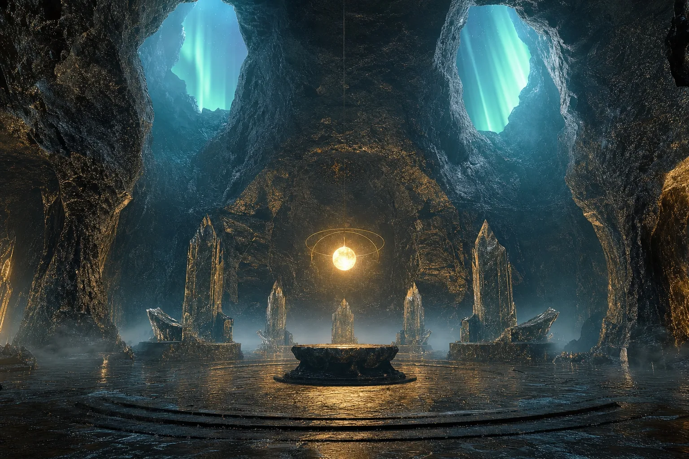

Independent reference · Edition VI
A Field Guide To A Belief With No Name
Nineteen pages mapping the Pleiadian New Age movement — its origin story, its theology, and the Gnostic cosmology underneath it. Every concept traced to the book, author and year it came from.
read the outline$25 once · no subscription
A movement with no founder, no scripture and no name.
It has no central text and no organisation. “Pleiadian New Age movement” is the label this document adopts so the beliefs can be discussed at all. Nineteen pages, five sections, every claim tied to the author who introduced it.
Inside


Every claim is traced to the book,
author and year that introduced it.
No belief is mocked. None is endorsed.
Read Edition VI · $25 once
Edition VI
Independent reference
§ A§ C§ E
An independent outline of a contemporary belief system, written from the outside for educational, historical and critical purposes. It reports what adherents hold, names the author and year behind each claim, and states what the record supports.
It identifies no one and predicts nothing.
Independent reference
Edition VI · Nineteen pages
Edition VI · Nineteen pages
001 / What is inside
Three layers, assembled by people who never met.
The movement has no founder, no scripture and no organisation. It is a synthesis — pseudo-archaeology from the late 1960s, contactee reports from the 1970s, channelled material from the 1990s, and a Gnostic framework eighteen centuries older than any of it. This outline separates the strands and shows the seams.
§ B
The origin story
Where the movement says humanity came from — the Anunnaki, the Reptilians, the Pleiadians, the Galactic Federation of Light, the Moon base, the Greys and Mantids, the hollow Earth. Each thread followed back to the text that introduced it.
§ C
The spiritual frame
The Source, starseeds, soul contracts, the Karmic Council, reincarnation, Gaia, the 144,000, vortexes, crystals, the seven dimensions and the frequency system — stated as adherents hold them, then set against the record.
§ D
The Gnostic substrate
The 2nd-century cosmology the whole structure is grafted onto: the Monad, the Pleroma, the Aeons, Sophia's fall, the Demiurge and the Archons — and how a Platonic craftsman-god became a devil.
- § AIntroductionNew Age theology; the movement's unnamed status2 pp
- § BAlien-race origin storyTen subsections, Anunnaki through hollow Earth6 pp
- § CMerging origin with theologyEleven subsections, the Source through the Matrix7 pp
- § DGnostic theologyCosmology, terminology, biblical borrowings4 pp
- § EAdditional conceptsAncient pantheons, cryptids, secret societies1 p
002 / Method
Every claim is reported as adherents hold it, attributed to the author who introduced it, and followed by a plain statement of what the evidence supports. No belief is mocked. None is endorsed. The reader is left to judge.
01
19
Pages, cited and cross-referenced
02
40+
Terms and concepts individually defined
03
1864→
Source range, from Verne to current journals
003 / Principal sources discussed
Erich von Däniken, Chariots of the Gods (1968) · Zecharia Sitchin, The Twelfth Planet (1976) and later works · Eduard “Billy” Meier, contact reports (from 1975) · Barbara Marciniak, Bringers of the Dawn (1992) · Barbara Hand Clow, The Pleiadian Agenda (1995) · David Icke, reptilian material (1990s) · Lovelock & Margulis on the Gaia hypothesis · the Nag Hammadi corpus, including the Apocryphon of John · Plotinus on emanation · Revelation 7 and 14 · and contemporary reporting on the three known interstellar objects, 1I/ʻOumuamua, 2I/Borisov and 3I/ATLAS.
004 / Before you buy
Is this written by a believer?
No. It is written from the outside, in a neutral register. Beliefs are reported accurately and without mockery, then followed by a plain note on what the historical and scientific record actually supports. If you are looking for confirmation, this is the wrong document.
Will it tell me whether I am a starseed?
No. It makes no claims about you, offers no reading, diagnosis or identification, and predicts nothing. It describes what the movement teaches about starseeds and where that teaching came from.
Why does the movement have no name?
Because it has no central text, founder or organisation. It is a loose synthesis assembled from several unrelated authors across sixty years. “Pleiadian New Age movement” is the descriptive label this document adopts for the sake of discussion.
What do I actually receive?
Immediate access to the current edition as a digital reference document, plus every future revision at no additional cost. One payment. No subscription and no recurring charge.
Single payment · no subscription
The current edition, and every revision after it.
$25 once. Immediate access on purchase. Future editions delivered at no additional cost. Full refund within 14 days, no reason required.
Get the document — $25